¿¡ Anacoluthe !?
Soutenance UC1-UC2 · BPJEPS voile habitable
Comment donner aux moniteurices
les moyens d'animer le vivre-ensemble
dans un contexte qui génère autant de tensions
que d'opportunités d'apprentissage ?
D'où vient cette question ?

Les échanges avec Romain Gauvrit
responsable croisière
à venir
Les rapports de mer
des tensions humaines
qui finissent en incidents techniques

Mon encadrement bénévole en croisière
et ce que j'y ai observé de la coopération
Pour la technique : cartes de progression, manuel, fiches. Pour le vivre-ensemble, très peu d'outils.
Ce que les référentiels demandent déjà
Les stagiaires · carte de progression FFVoile


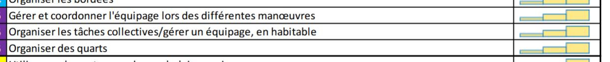
Les moniteurices · CQP-IV


Ces compétences figurent déjà au programme. Le projet donne des outils pour les travailler.
« … par la mer, … à la vie collective »
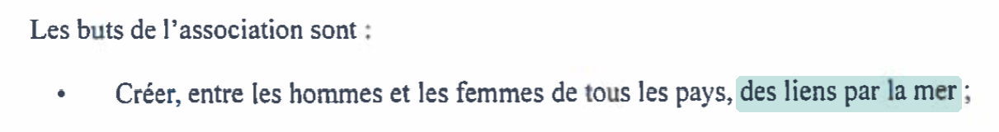
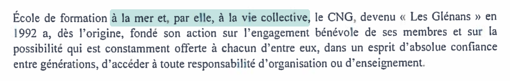
Extraits des statuts des Glénans.
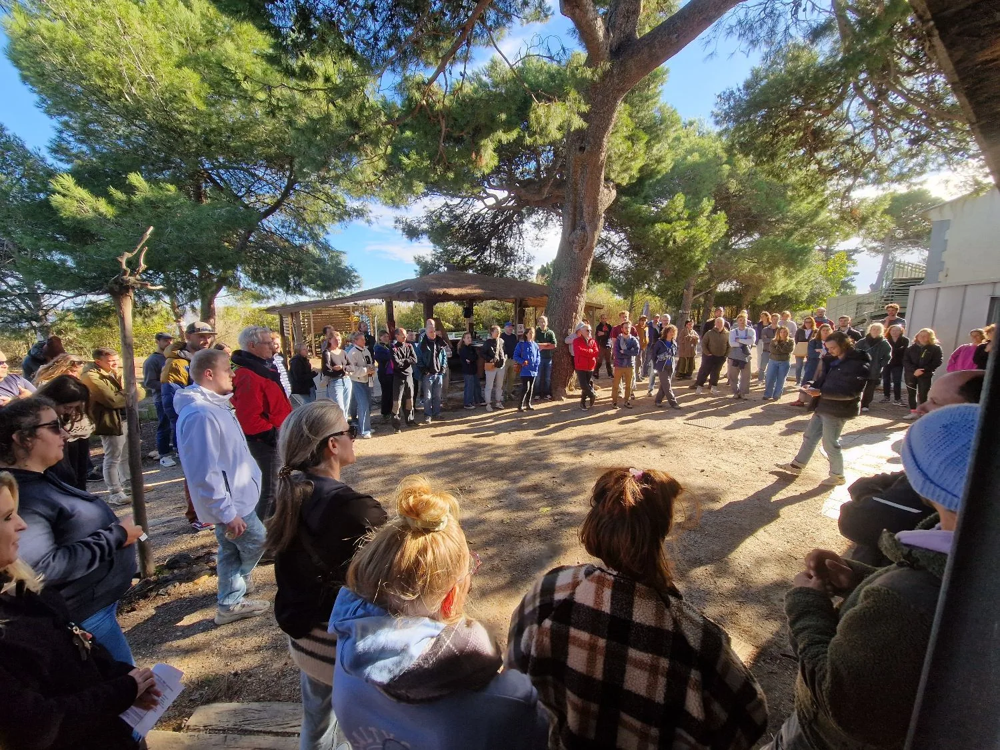
Le terrain
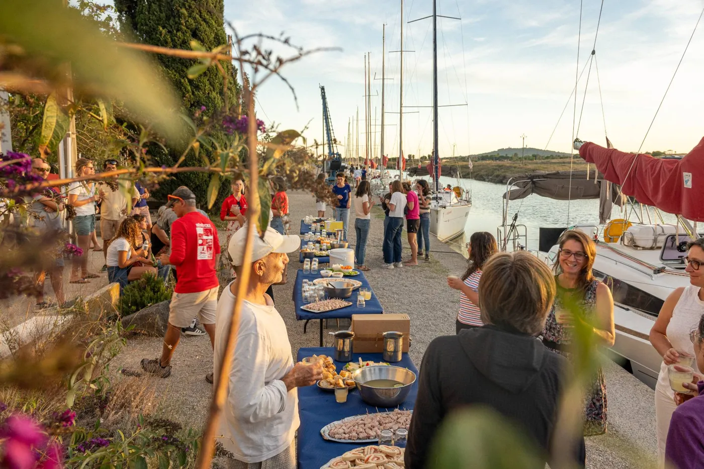


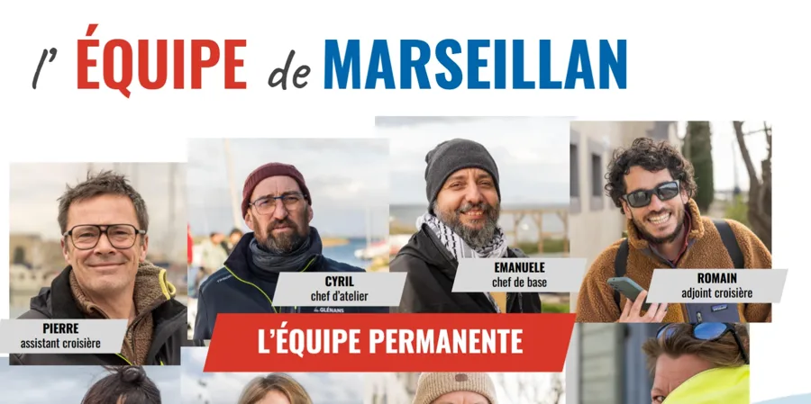
La voile habitable à Marseillan, par an : environ 2 000 stagiaires, une centaine de moniteurices, 12 à 14 voiliers.
Deux publics, deux niveaux
Le projet
former et outiller celles et ceux qui encadrent
Les moniteurices
animer le vivre-ensemble et l'enseigner
Les stagiaires
apprendre à coopérer en même temps qu'à naviguer
bénévoles occasionnels ne pas rester démunis face à une tension
contractuels CQP être reconnus aussi sur la conduite du groupe
RTQ être moins sollicités
Les stagiaires : jeunes adultes en été, actifs de 35 à 60 ans hors saison, pratiquants confirmés en stages techniques au printemps et à l'automne.
Comment travailler ?
Le contexte
Le choix de méthode
Une association d'éducation populaire« formation à la mer et, par elle, à la vie collective »
S'inspirer de l'éducation populairefaire avec les moniteurices plutôt que pour elleux
Peu de temps, pas de budgetsur base, l'apprenti est surtout un encadrant
Avancer par itérationsdes cycles courts : tester en stage, recueillir, ajuster
Une réponse incertainepersonne ne savait quelle forme prendrait l'outil
Une expérience mobilisablele design d'initiatives sociales, mon métier d'avant
Utiliser les méthodes du designprototyper tôt, faire réagir sur un objet, réviser
Du diagnostic aux objectifs
14 entretiens, 3 ateliers de pair-à-pair et des échanges informels
Prévenir les incidents
Réduire les dysfonctionnements d'équipage sources d'incidents
Éducation populaire
Contribuer à la mission d'éducation populaire des Glénans
Progression technique
Améliorer la progression technique sur les items d'organisation collective et de sens marin
Ce que le projet apporte
Du vocabulaire et des compétences pour animer le vivre-ensemble.
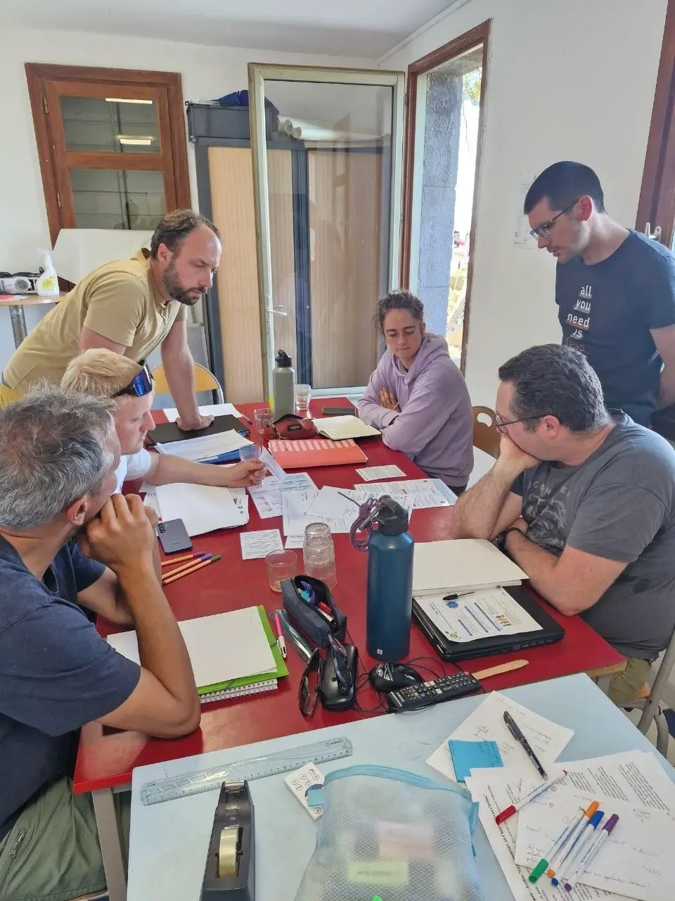
Former
des ateliers, sur des créneaux qui existaient déjà

Outiller
des affiches et des cartes calées sur les rituels du stage

Diffuser
un site, des fichiers libres, imprimables à la demande

Découvrons la version définitive de la boîte à outils embarquée.
Une boîte à outils à 4 compartiments
un outil formel là où on improvisait
distribuer l'organisation
une forme pour les moments clefs
savoir par où commencer
Les affiches embarquées
Les consignes répétées chaque matin sont affichées :
la moniteurice a moins à les redire.

Les rôles coopératifs
L'organisation du bord reposait surtout sur la moniteurice.
Quatre rôles tournants la répartissent dans l'équipage.

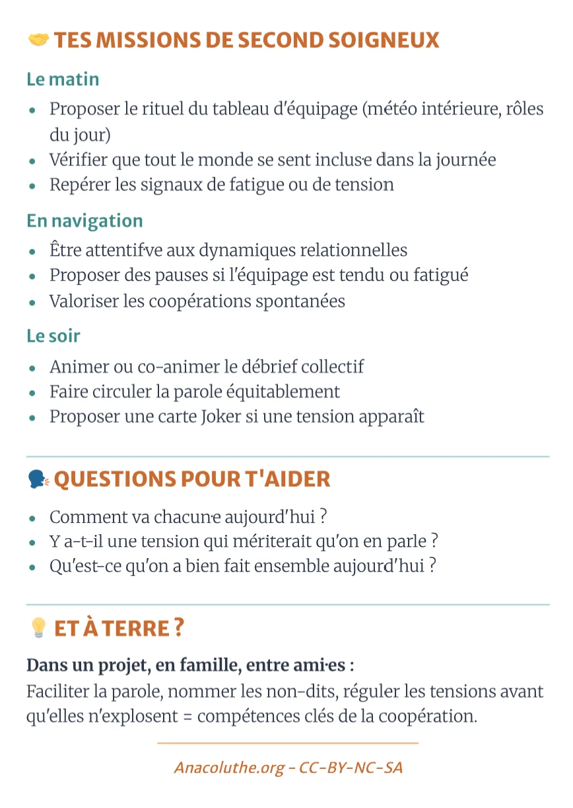
Les sept moments
Accueil, briefs, débriefs existent déjà.
Sept cartes proposent un déroulé pour y faire coopérer l'équipage.
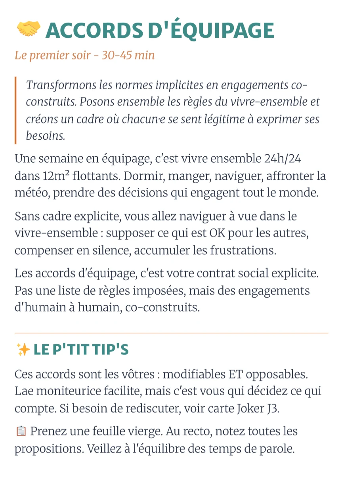

Les quatre jokers
Quand la tension monte, l'équipage suit un protocole au lieu d'improviser.
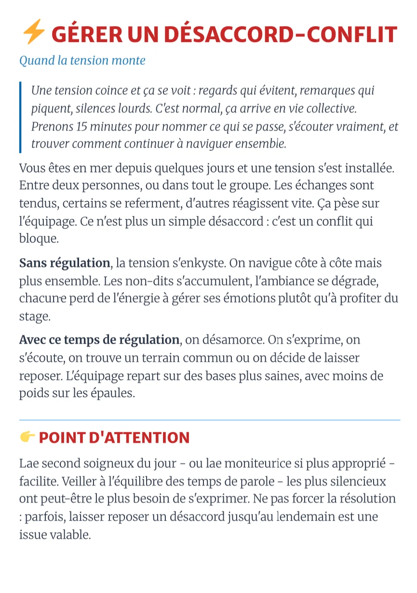
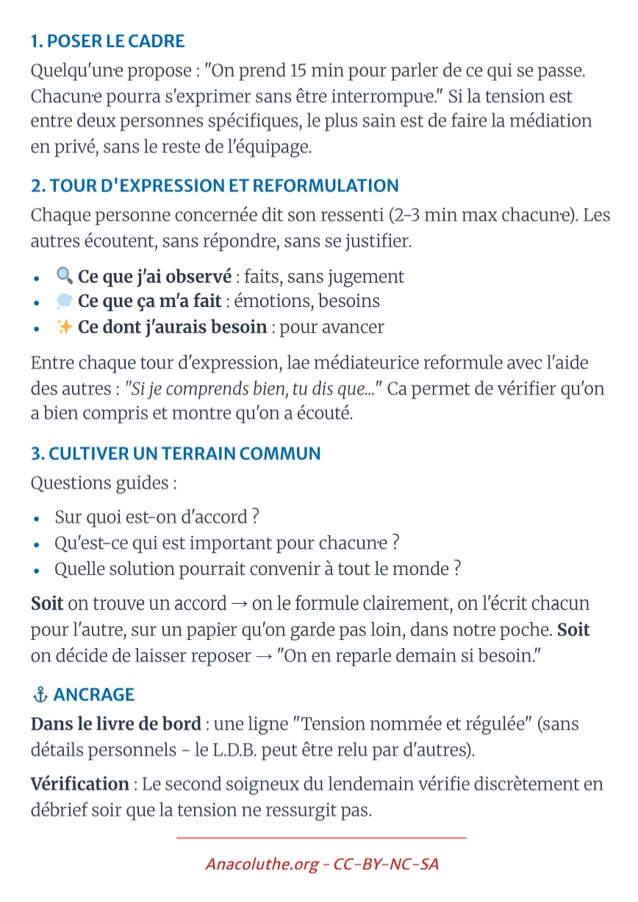
Le site anacoluthe.org
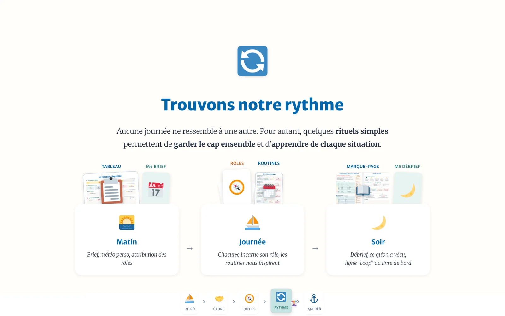
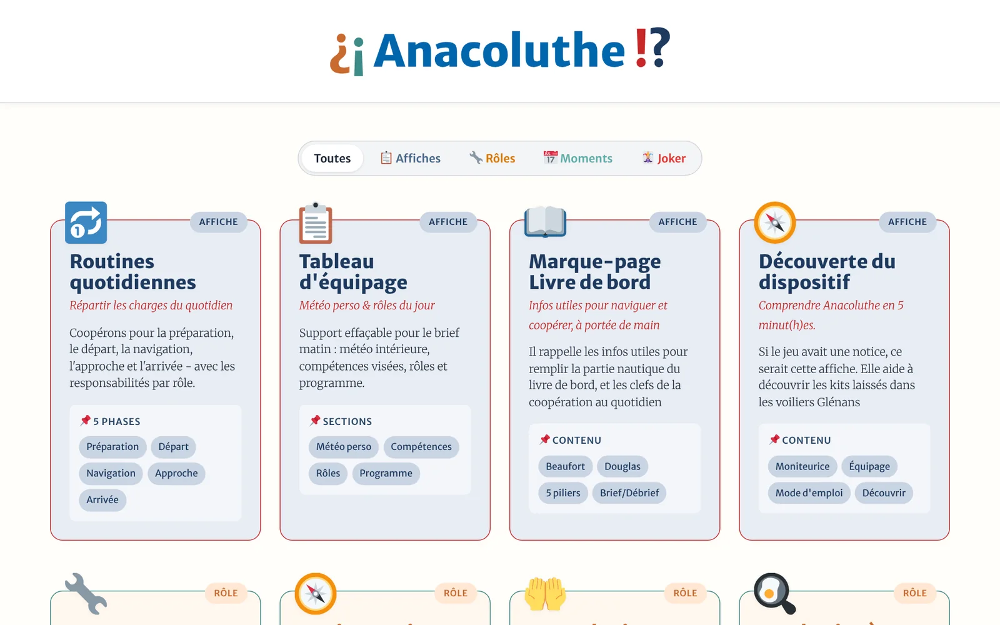
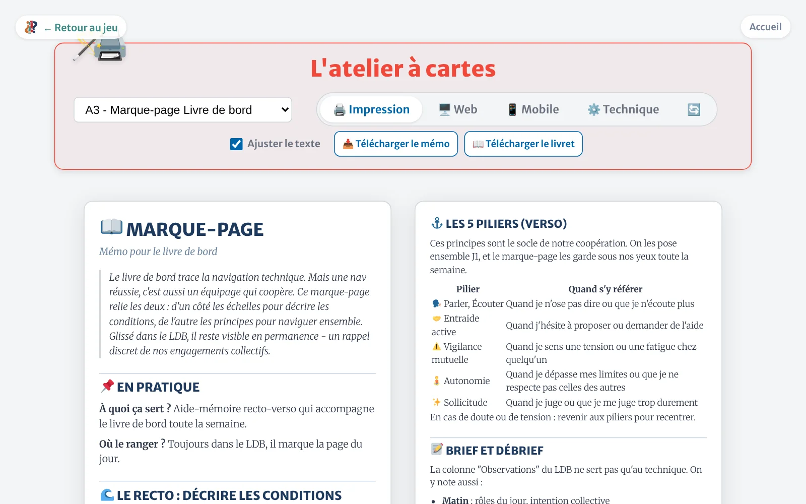
Quatre phases

Concevoir l'outil,
c'était déjà former
Les moniteurices se sont formées en le fabriquant.
Sa diffusion a lancé des discussions dans la base.
Pendant les ateliers, elles ont nommé des tensions, choisi entre deux cartes, défendu un choix devant le groupe : les gestes mêmes qu'on attend d'elles à bord.

Ce que j'ai animé
Avec les moniteurices
- co-concevoir l'outil
- les former
- le tester en escadre avec celles qui co-encadraient
Avec les stagiaires
- des stages avec le kit à bord
- des ateliers express de co-conception
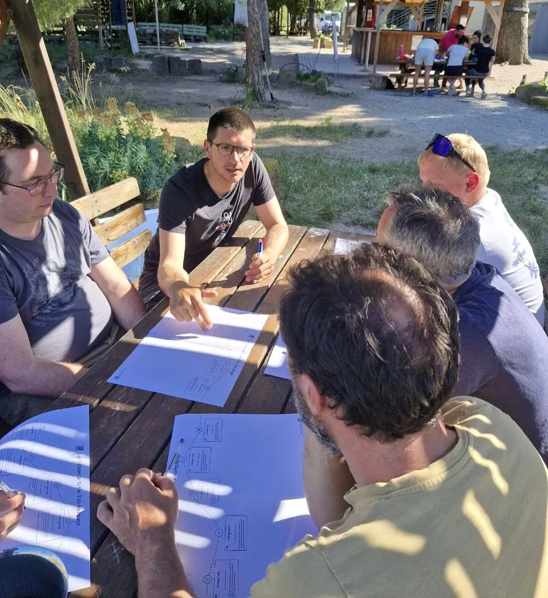
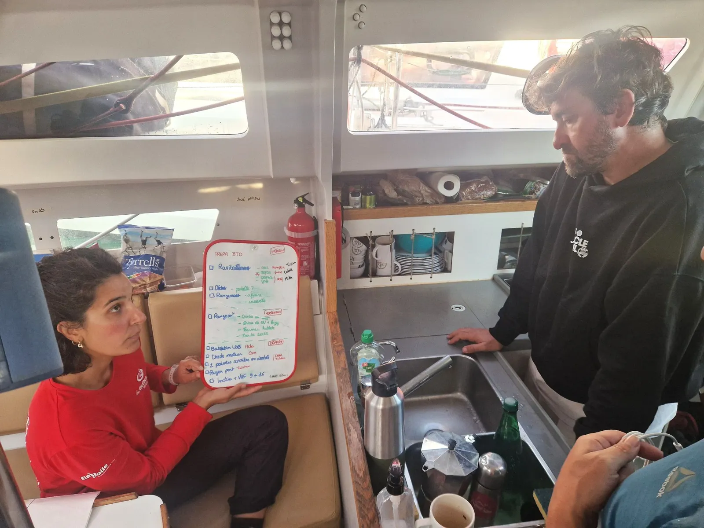

Cinq versions, neuf mois
Les ateliers de formation
- Arpentage · co-développement · apports sur la coopération
- Quatre ateliers de 2 h : 12 des 22 moniteurices formées y sont passées
- Annoncés le samedi au démarrage des stages, pour le vendredi suivant
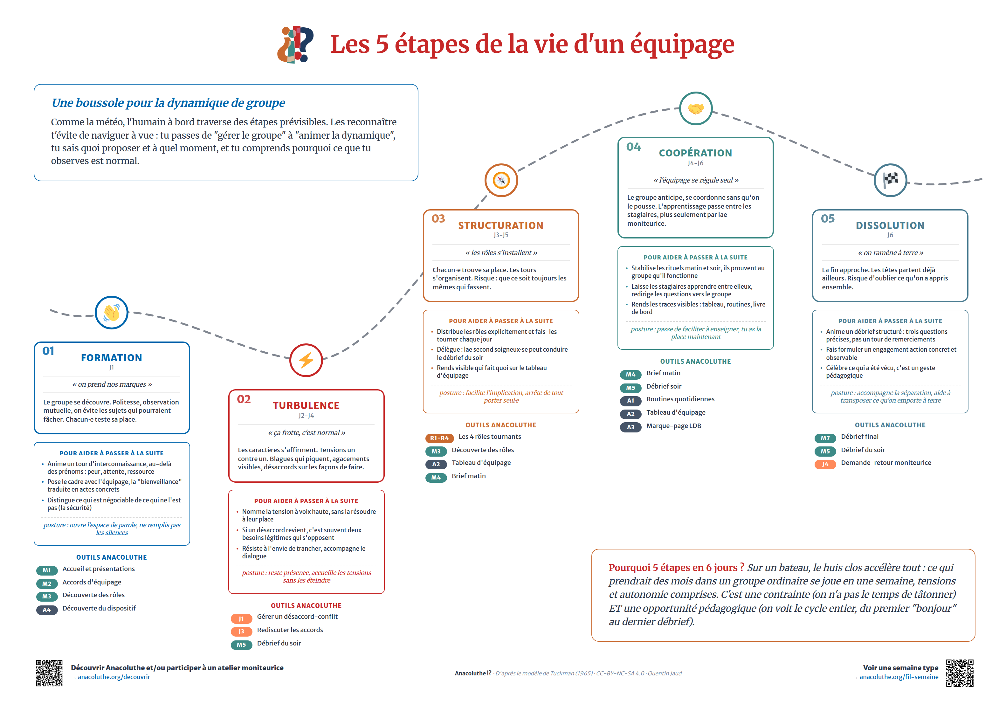
Avec quels moyens ?
Il fallait du temps hors face-à-face
les créneaux qui existaient déjà
formation du vendredi et formations pédagogiques initiales
1 FPI2 · 4 ateliers du vendredi · 10 h d'atelier
Il fallait imprimer, plastifier
l'imprimante et le stock de la base
247 feuilles A4 · 172 plastifiées · 36 € imputés
Il fallait des compétences que je n'avais pas
le mécénat de compétences
6 intervenant·es · 13 ateliers · 5 000 € valorisés
Après le projet, ce qui reste
- Huit bateaux équipés durablement, le marque-page dans le livre de bord
- Kits et documentation en ressourcerie, aux côtés des autres supports
- Une partie des supports de démarrage de stage rénovés

L'écart au prévu
J'ai sous-estimé trois contraintes, dont ma propre disponibilité.
Aux deux voies de formation prévues s'en sont ajoutées trois.
Deux des cinq reposaient sur moi et ne sont pas transposables.
Ce que montrent les retours
Les moniteurices formées utilisent davantage le kit.
4 des 6 moniteurices interrogées l'intègrent aux routines,
2 s'arrêtent aux affiches.
19/28 d'accord avec kit, contre 4/15 sans kit
« Les tensions, quand il y en a eu, ont été exprimées avant de dégrader le climat »
43 questionnaires (28 avec kit, 15 sans) · 9 entretiens
Les 15 réponses sans kit donnent un repère, trop maigre pour comparer.
Le cap à dix ans
« En 2035, l'association Les Glénans est un lieu d'expérimentation de nouveaux possibles »
Cap voté par le conseil d'administration, novembre 2025.
Trois axes. Deux concernent directement la filière croisière :
l'autonomie et l'interdépendance par la navigation,
faire société dans un esprit d'inclusion et de fraternité.
Les stages portent déjà ces axes, sans outil pour les travailler.
Ce qui reste
Le kit est utilisé à Marseillan, mais personne n'est encore chargé de le porter.
Il manque trois choses :
- un relais nommé et mandaté
- un temps de formation inscrit dans un plan, et non pris sur le temps du porteur de projet
- une maintenance assurée
Apports et limites
Comment donner aux moniteurices les moyens d'animer le vivre-ensemble dans un contexte qui génère autant de tensions que d'opportunités d'apprentissage ?
- Une formation qui vise leur autonomie d'animation
- Une boîte à outils utilisable sans formation préalable
- La modification pérenne des outils et pratiques existants
Animer le vivre-ensemble, et faire des tensions un sujet de travail à bord.
La limite : des données déclaratives, et un biais de sélection.
Ce que je conduirais autrement : compter dès la conception le temps de formation informelle
· nommer un relais avant la V5 · saisir plus tôt le CEB (formation continue des bénévoles).